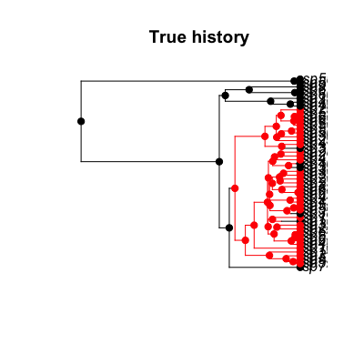
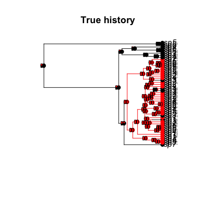

"make.asr.marginal"(lik, ...) "make.asr.marginal"(lik, ...)
make.mk2 or
make.mkn.Perform ancestral state reconstruction under BiSSE and
other constant rate Markov models. Marginal reconstructions are
supported (c.f. asr). Documentation is still in an
early stage, and mostly in terms of examples.
## Start with a simple tree evolved under a BiSSE with all rates ## asymmetric: pars <- c(.1, .2, .03, .06, .01, .02) set.seed(3) phy <- trees(pars, "bisse", max.taxa=50, max.t=Inf, x0=0)[[1]] ## Here is the true history h <- history.from.sim.discrete(phy, 0:1) plot(h, phy, main="True history")
## BiSSE ancestral state reconstructions under the ML model lik <- make.bisse(phy, phy$tip.state) fit <- find.mle(lik, pars, method="subplex") st <- asr.marginal(lik, coef(fit)) nodelabels(thermo=t(st), piecol=1:2, cex=.5)## Mk2 ancestral state reconstructions, ignoring the shifts in ## diversification rates: lik.m <- make.mk2(phy, phy$tip.state) fit.m <- find.mle(lik.m, pars[5:6], method="subplex") st.m <- asr.marginal(lik.m, coef(fit.m)) ## The Mk2 results have more uncertainty at the root, but both are ## similar. nodelabels(thermo=t(st.m), piecol=1:2, cex=.5, adj=-.5)
## <strong>Not run</strong>: # ## (This section will take 10 or so minutes to run.) # ## Try integrating over parameter uncertainty and comparing the BiSSE # ## with Mk2 output: # prior <- make.prior.exponential(2) # samples <- mcmc(lik, coef(fit), 1000, w=1, prior=prior, # print.every=100) # st.b <- apply(samples[2:7], 1, function(x) asr.marginal(lik, x)[2,]) # st.b.avg <- rowMeans(st.b) # # samples.m <- mcmc(lik.m, coef(fit.m), 1000, w=1, prior=prior, # print.every=100) # st.m <- apply(samples.m[2:3], 1, function(x) asr.marginal(lik.m, x)[2,]) # st.m.avg <- rowMeans(st.m) # # ## These end up being more striking in their similarity than their # ## differences, except for the root node, where BiSSE remains more sure # ## that is in state 0 (there is about 0.05 red there). # plot(h, phy, main="Marginal ASR, BiSSE (left), Mk2 (right)", # show.node.state=FALSE) # nodelabels(thermo=1-st.b.avg, piecol=1:2, cex=.5) # nodelabels(thermo=1-st.m.avg, piecol=1:2, cex=.5, adj=-.5) # ## <strong>End(Not run)</strong> ## Equivalency of Mk2 and BiSSE where diversification is state ## independent. For any values of lambda/mu (here .1 and .03) where ## these do not vary across character states, these two methods will ## give essentially identical marginal ancestral state reconstructions. st.id <- asr.marginal(lik, c(.1, .1, .03, .03, coef(fit.m))) st.id.m <- asr.marginal(lik.m, coef(fit.m)) ## Reconstructions are identical to a relative tolerance of 1e-7 ## (0.0000001), which is similar to the expected tolerance of the BiSSE ## calculations. all.equal(st.id, st.id.m, tolerance=1e-7)[1] TRUE## Equivalency of BiSSE and MuSSE reconstructions for two states: lik.b <- make.bisse(phy, phy$tip.state) lik.m <- make.musse(phy, phy$tip.state + 1, 2) st.b <- asr.marginal(lik.b, coef(fit)) st.m <- asr.marginal(lik.m, coef(fit)) all.equal(st.b, st.m)[1] TRUE